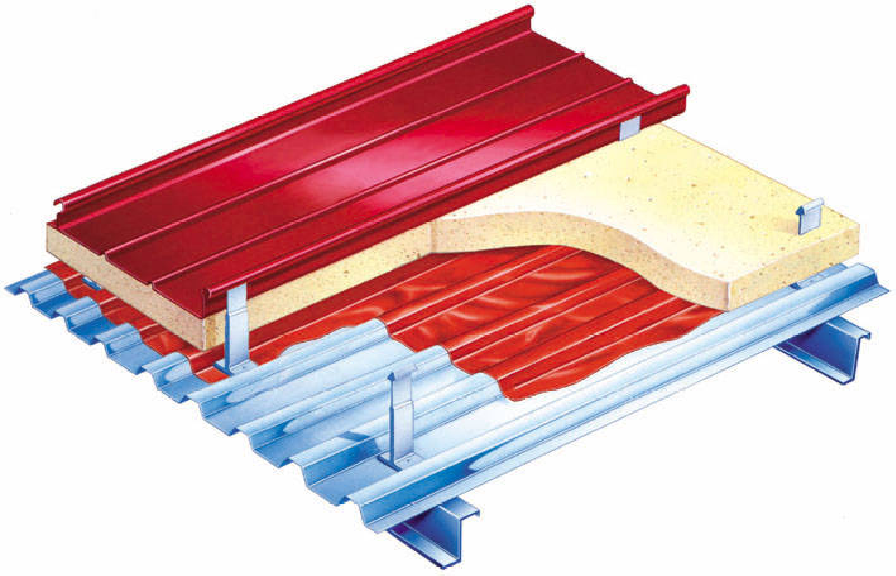
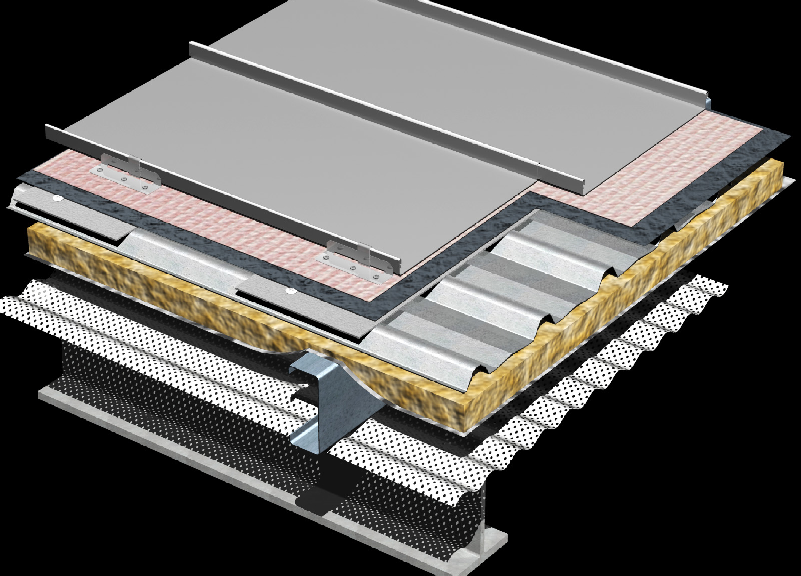
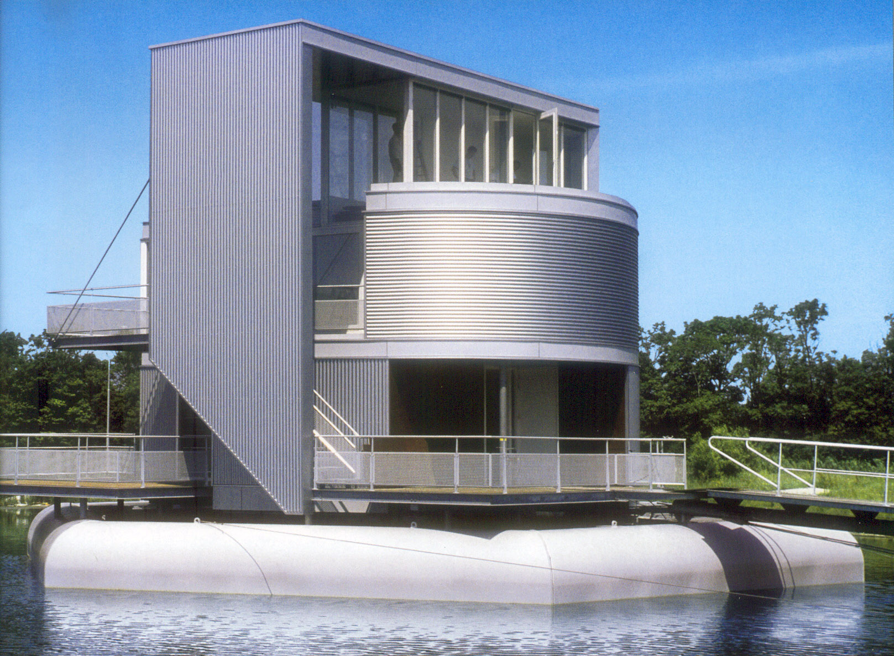
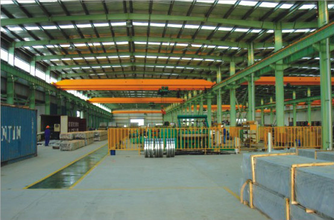
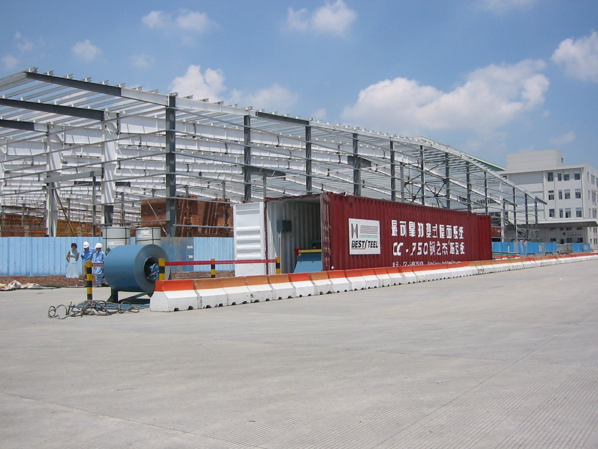

彩钢板屋墙面围护系统
屋面系统解决方案
（一）钢结构压型钢板屋面

屋面基本构造层次由上至下依次为：
- 镀铝锌或镀铝镁锌镁压型钢板外板 （≥0.6mm）
- 玻璃棉（≥50mm，≥12Kg/m3，带铝箔或聚酯贴面）
- PE隔气层（≥0.3mm）
- 镀铝锌或镀铝锌镁压型钢板内板 （≥0.4mm）
- 镀锌檩条
特点：
- 通过严苛测试，抗风和防水性能良好。
- 保温性能良好，隔音、防火、无污染。
- 有通过FM认证的屋面系统可选。
- 结构简单，自重轻，受力合理、造价低，结构形式多样、适应变形能力强、施工速度快，主要用于工业建筑。
（二）公共建筑钢结构压型钢板屋面

屋面基本构造层次由上至下依次为：
- 铝或镀铝锌、镀铝锌镁铝压型钢板外板 （≥0.8mm）
- 无纺布层
- 高分子防水层（TPO、EPDM或SBS防水卷材，≥1.2mm）
- 镀锌钢板找平层或折件次檩条（≥0.8mm）
- 镀铝锌或镀铝锌镁压型钢板 （≥0.5mm）
- 玻璃棉（≥50mm，≥12Kg/m3，带铝箔或聚酯贴面）
- 镀锌檩条
- 镀铝锌或镀铝锌镁穿孔压型钢板内板 （≥0.4mm）
特点：
- 通过严苛测试，抗风和防水性能优秀。
- 保温性能优秀，隔音、防火、无污染。
- 有通过FM认证的屋面系统可选。
- 结构复杂，对施工、项目管理和技术指导要求高，适用于对建筑可靠性要求极高的项目，主要用于机场、车站、会展中心等公共建筑。
墙面系统解决方案
（一）钢结构压型钢板墙面

墙面基本构造层次由外至内依次为：
- 镀铝锌、镀铝锌镁铝压型钢板外板 （≥0.6mm）
- 玻璃棉（≥50mm，≥12Kg/m3，带铝箔或聚酯贴面）
- 镀锌次檩条（墙面板横铺时需要）
- 镀锌檩条
- 镀铝锌或镀铝锌镁压型钢板内板 （≥0.4mm）
特点：
- 通过严苛测试，抗风和防水性能良好。
- 保温性能良好，隔音、防火、无污染。
- 结构简单，自重轻，受力合理、造价低，结构形式多样、适应变形能力强、施工速度快，主要用于工业建筑。
（二）钢结构夹芯板墙面

墙面基本构造层次由外至内依次为：
- 夹芯板外板 （≥50mm，外层≥0.6mm，内层≥0.5mm，芯材为聚氨酯或岩棉）
- 镀锌次檩条（墙面板横铺时需要）
- 镀锌檩条
- 镀铝锌或镀铝锌镁压型钢板内板 （≥0.4mm），或石膏板（根据需要设置）
特点：
- 通过严苛测试，抗风和防水性能良好。
- 保温性能优秀，隔音、防火、无污染。
- 立面美观大气，造价比压型钢板高，比铝单板或石材等幕墙低，主要用于要求较高的工业建筑或商业建筑。
技术、生产和服务的提供
（一）专业的技术支持

- 询问有关项目的详细内容；
- 理解客户的需求和个性化的选择；
- 提供经典的钢建筑设计方案及高性价比产品的推荐；
- 提供承载计算书；
- 确定方案和设计；
- 钢檩条、压型钢板的排板图及其他围护系统 （收边系统、排水、采光、通风器）的深化设计、钢结构的详图设计等；
- 现场施工、安装指导；
- PDCA质量检查循环。
（二）先进的制造能力

- 优选国内外知名品牌原材料厂家和彩钢板压型厂家；
- 原材料的镀层和涂层经过严苛的实验室测试和环境的测试；
- 压型设备来自于国内外著名企业；
- 一流的加工技术和创新技术；
- 具有各种复杂屋面墙面的生产、安装经验，配备相应的专用设备；
- ISO9001质量认证体系；
- 高于国家标准的质量验收标准；
- 产品经过风压试验、墙体复合荷载试验、抗冲击力试验、循环破坏性试验、耐火极限试验等严苛测试，部分产品系统还通过了UL认证、LEED认证、FM认证；
- 配备特制的集装箱，可满足客户在现场生产的要求，可提供高空压型，长板无需搭接。
（三）贴心的服务能力

- 按客户的需求提供各种实样和组合样品；
- 为客户推荐高性价比的原材料（质量、价格）；
- 只要未投料生产仍可接受客户的变更要求；
- 充沛的库存、迅速快捷的交货，满足不同选择；
- 三种不同的成品包装标准；
- 提供运输委托服务；
- 加工运行节奏与现场项目同步。